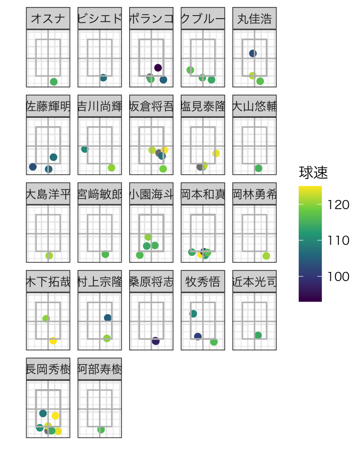
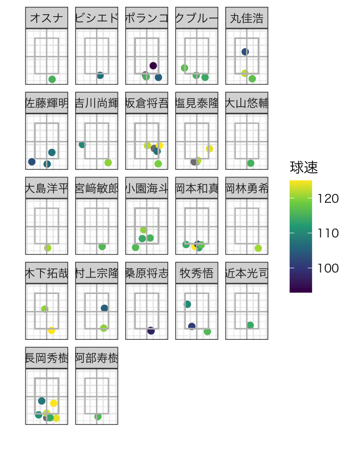
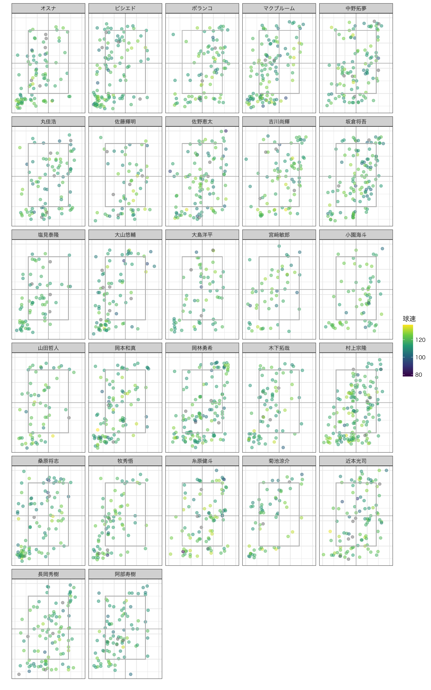

2022 セ・リーグ打者-カーブ 打撃結果
| 単打 | 長打 | 本塁打 | 空振り | 見逃し | 内野ゴ | 内野直 | 内野飛 | 外野飛 | ファウル | ボール | 失出塁 | 振逃 | 犠打 | 球数合計 | |
|---|---|---|---|---|---|---|---|---|---|---|---|---|---|---|---|
| 119km台以下 | 85 | 17 | 17 | 127 | 492 | 105 | 9 | 26 | 94 | 249 | 975 | 3 | 1 | 3 | 2203 |
| 120km台 | 36 | 11 | 1 | 73 | 201 | 57 | 2 | 9 | 25 | 118 | 366 | 2 | 0 | 0 | 901 |
| 130km台 | 1 | 2 | 0 | 3 | 17 | 3 | 1 | 1 | 0 | 16 | 26 | 1 | 0 | 0 | 71 |
| NA | 15 | 7 | 1 | 9 | 28 | 27 | 2 | 1 | 5 | 11 | 44 | 1 | 0 | 0 | 151 |
| 単打 | 長打 | 本塁打 | 空振り | 見逃し | 内野ゴ | 内野直 | 内野飛 | 外野飛 | ファウル | ボール | 失出塁 | 振逃 | 犠打 | |
|---|---|---|---|---|---|---|---|---|---|---|---|---|---|---|
| 119km台以下 | 3.86 | 0.77 | 0.77 | 5.76 | 22.33 | 4.77 | 0.41 | 1.18 | 4.27 | 11.30 | 44.26 | 0.14 | 0.05 | 0.14 |
| 120km台 | 4.00 | 1.22 | 0.11 | 8.10 | 22.31 | 6.33 | 0.22 | 1.00 | 2.77 | 13.10 | 40.62 | 0.22 | 0.00 | 0.00 |
| 130km台 | 1.41 | 2.82 | 0.00 | 4.23 | 23.94 | 4.23 | 1.41 | 1.41 | 0.00 | 22.54 | 36.62 | 1.41 | 0.00 | 0.00 |
| NA | 9.93 | 4.64 | 0.66 | 5.96 | 18.54 | 17.88 | 1.32 | 0.66 | 3.31 | 7.28 | 29.14 | 0.66 | 0.00 | 0.00 |
rows
打者別 (swing,speed) (対右投手)
rows
打者別 (swing,speed) (対左投手)
rows
打者別 打撃結果 (対右打者)
rows
打者別 打撃結果 (対左打者)
rows
打者別 結果球 (対右投手)
rows
打者別 結果球 (対左投手)
Column
球速/コース (対右投手)

球速/コース (対左投手)
Column
投球データ(対右投手 swstr)
投球データ(対左投手 swstr)
Column
投球データ(対右投手 被安打)
投球データ(対左投手 被安打)